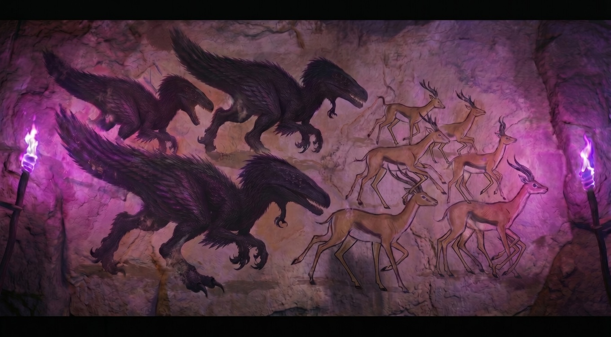

Every speculative fiction writer hits a wall at some point where the logic of the world they've built creates a problem they didn't anticipate. Chapter Six of The Emotion Engine was mine.
Shaden Stewart has been alone on this planet for weeks. He's catalogued the wildlife, survived the storms, named things — because naming, as I've written before, is easier than feeling. But deep in a cave system he's been cautiously exploring, he finds something that stops him cold: a room. Clearly constructed. Clearly intentional. And lining every wall, a series of images he can't look away from.
The problem I ran into as a writer was straightforward and also completely maddening: how does an alien civilization communicate its entire history to a visitor it will never meet, in a language that visitor cannot possibly speak or read?
The Voyager Problem
In 1972, NASA bolted a gold-anodized aluminum plaque to the side of the Pioneer 10 spacecraft before launching it out of the solar system. They knew the probe might one day drift close enough to another star system to be found. And if it was found, whoever found it would have no frame of reference for human language, human culture, or human existence. So the scientists did something elegant — they drew pictures.
The Pioneer plaque depicts a man and a woman, the probe itself for scale, a diagram of our solar system, a pulsar map pointing back to Earth, and a schematic of the hydrogen atom as a universal unit of measurement. No words. Just images carefully chosen to be interpretable by any sufficiently intelligent observer, regardless of what language they spoke or what world they came from.
Voyager took it further. The Golden Record — attached to both Voyager 1 and Voyager 2 — included sounds of Earth, greetings in 55 languages, and 115 images. But the cover of the record itself was engraved with instructions for how to play it, again using diagrams rather than text. The underlying assumption was the same one that has guided communication across language barriers since the first cave paintings: images are closer to universal than words will ever be.
That assumption is what my alien civilization built their room around.
The Mural Room
What Shaden finds is a long chamber, clearly preserved — the air inside tells him it was sealed deliberately. And on every wall, painted in pigments that have somehow survived what must be thousands of years, are murals. Each one depicts a scene. Beneath each scene, a line of text in an alphabet Shaden cannot read.
The murals tell a story in sequence. A world teeming with life. A civilization rising. Technology advancing. Something going wrong — the images here are darker, more chaotic. And then, in the final panels, a departure. Ships. The population leaving. The planet emptied. The last mural shows the chamber itself — a figure gesturing at the walls, as if to say: this is for you, whoever you are.

The text beneath each image remains a mystery. Shaden can read the broad shape of the history — the pictures give him that — but the nuance, the names, the reasons, the grief or relief or hope that accompanied that departure, all of it is locked inside an alphabet he may never decode. He knows what happened. He doesn't know what it meant to the people it happened to.
I find that limitation more interesting than full comprehension would have been. There's something true in it. We look at cave paintings from 40,000 years ago and we can see the animals, we can see the hands pressed against the stone, we can feel the reach across time. But we don't know what they were thinking. We don't know what the paintings meant to the people who made them. The image survives. The interior life doesn't.
What It Does to Shaden
This is a man who has spent his life processing experience as data. The murals break that habit in him, at least temporarily. You can catalogue a creature. You can measure a storm. You cannot catalogue grief rendered in paint by hands that have been dust for millennia. The room asks something of him that his training didn't prepare him for — it asks him to feel the weight of it rather than just record it.
Whether he manages that is something I'm still writing. But the room exists now, and it's one of the sections of the manuscript I'm most pleased with. Sometimes a craft problem, wrestled with long enough, gives you something better than what you originally planned.
Thanks, Voyager.
—Charles